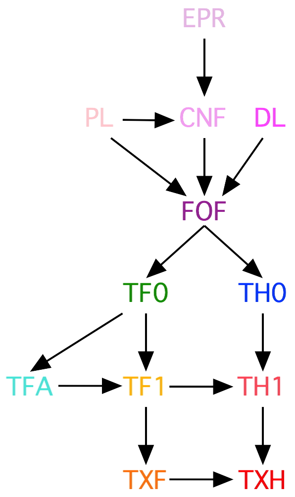

The TPTP Language Hierarchy

Years of development ...
- 1993 - CNF: Clause Normal Form including
PL: Propositional Logic
- 1997 - FOF: First-order Form
- 2000 - EPR: Effectively Propositional CNF
- 2004 - New syntax, BNF, etc.
- 2009 - TH0: Monomorphic Typed Higher-order Form
- 2010 - TF0: Monomorphic Typed First-order Form
- 2010 - TFA: TF0 with arithmetic
- 2013 - TF1: Polymorphic Typed First-order Form
- 2015 - DL: Description Logic (never released)
- 2016 - TH1: Polymorphic Typed Higher-order Form